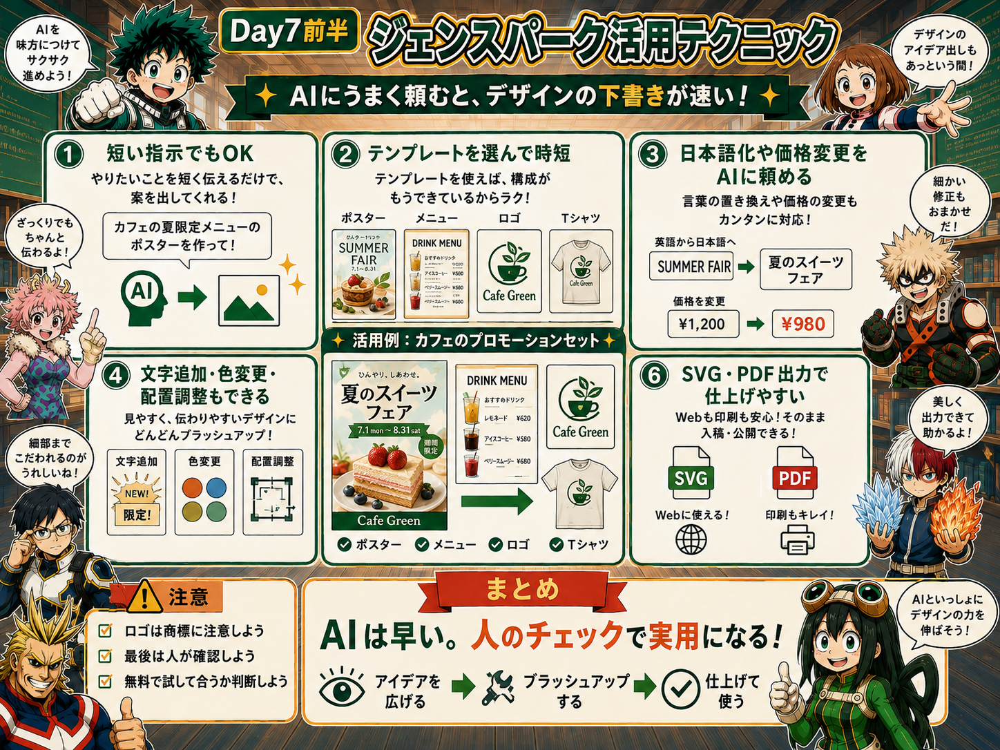
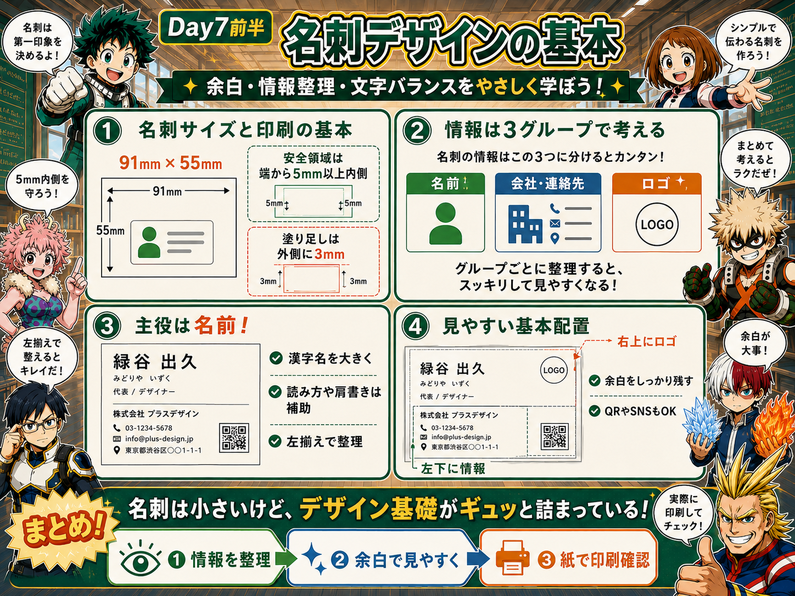
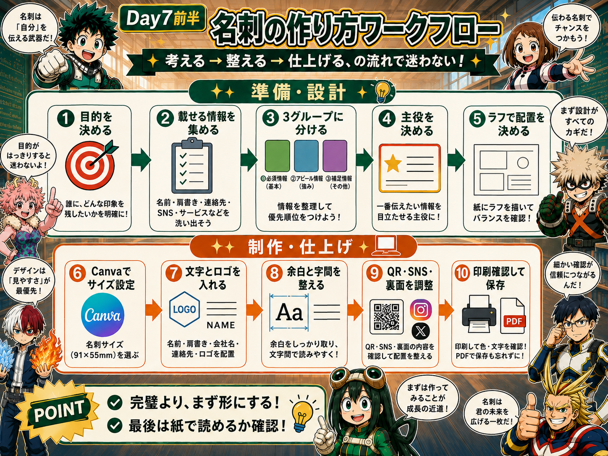
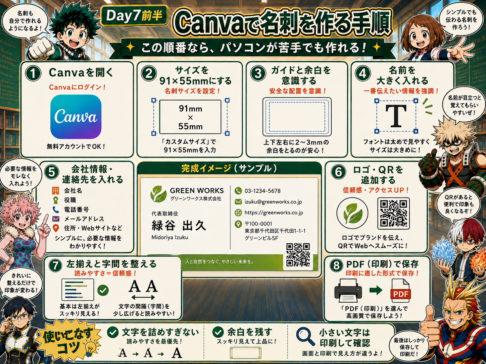
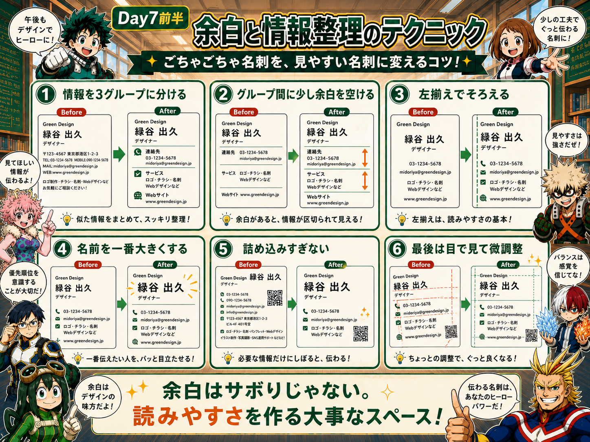
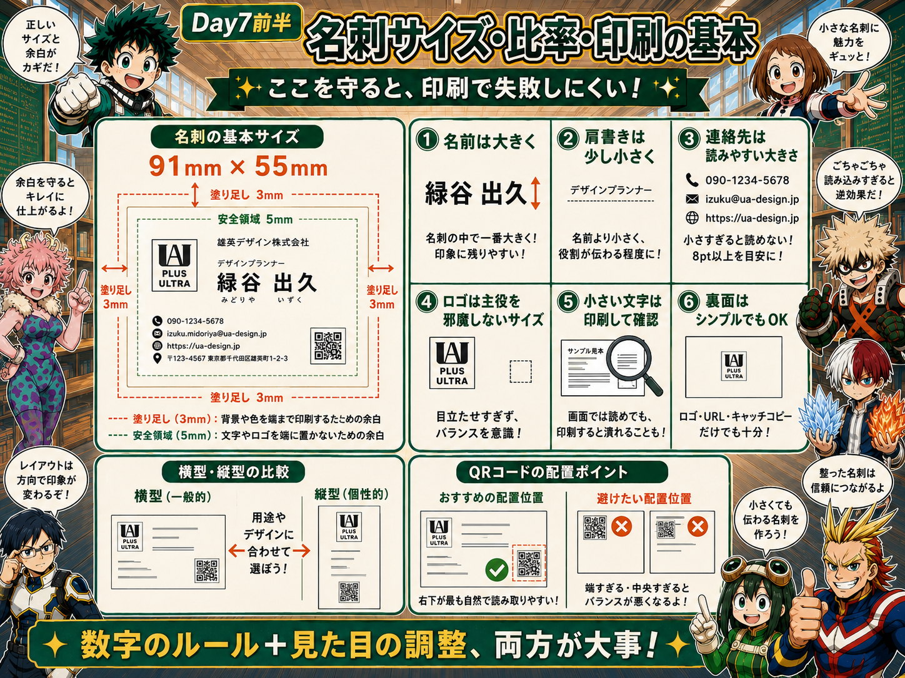
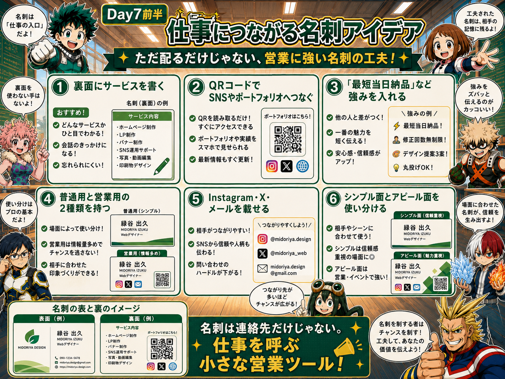

1. ジェンスパークAIデザイナー｜最初の1案を速く作る
資料では、ジェンスパークのAIデザイナーを使うと、ポスター・チラシ・ロゴ・メニュー・クーポン・SNS投稿・カード・Tシャツなど幅広いデザインのたたき台を作れると紹介されている。

デザインって、白紙を見ると何から始めたらええか分からん……。

最初の案だけAIに作ってもらえばいいんだ。短いプロンプトでも始められて、テンプレートから修正もできるよ。
AIは「完成品を丸投げする相手」ではなく「白紙をなくす相手」と考えると使いやすい。
最後は人間が見ろ！ 文字、価格、商標、印刷サイズまで確認して初めて実用品だ！
「夏のカフェメニューを作って」程度から始め、後で条件を足す。
ゼロから作らず、近いデザインを選んで時短する。
日本語化、価格変更、色変更、文字追加、配置調整を組み合わせる。
資料ではSVGやPDFへのエクスポートにも触れられている。
2. AIデザインを実用レベルへ近づけるコツ
最初の出力をそのまま使うのではなく、「日本語にする」「価格を直す」「目立たせたい言葉を追加する」「色と位置を整える」と小さく修正していく。

「日本語化して」「価格を980円に」「セール文字を追加」のように分けると確認しやすい。
AIが提案する星・花などの別バリエーションを並べ、目的に近い案を選ぶ。
生成案・コンセプト・修正方針をまとめると、提案やチーム共有に使いやすい。
3. 名刺デザインの基本｜小さい紙にデザイン基礎が全部入っている
名刺は、名前・肩書き・会社情報・連絡先・ロゴなどを小さな紙面へ整理する練習。余白、情報整理、文字組み、視線誘導、印刷知識をまとめて学べる。

名前を最も大きく。読み方や肩書きは補助情報として扱う。
会社名、電話、メール、住所、Webなどをひとまとまりにする。
情報と競争しない大きさで配置。資料では右上配置を基本例としている。
4. 名刺の作り方ワークフロー｜考える → 整える → 仕上げる
いきなりCanvaを開くより、先に「目的・載せる情報・優先順位」を整理すると迷いにくい。

5. Canvaで名刺を作る手順
Canvaでは、最初に日本標準サイズの91mm×55mmを設定し、ガイドと余白を意識しながら情報を置いていく。

91mm×55mmを基本にする。
名刺の主役。最初に大きさを決める。
クセの少ないゴシック体など、長く使いやすいものから選ぶ。
Web、Instagram、Xなど、連絡されやすい導線として使う。
6. 余白と情報整理｜ごちゃごちゃ名刺を見やすくする
余白は「空いていてもったいない場所」ではなく、情報を分けて読みやすくするためのスペース。

電話・メール・住所などは同じグループに置く。
会社情報と個人連絡先など、意味の区切りに余白を入れる。
数値は目安。少し離れて見て、違和感があれば微調整する。
7. 名刺サイズ・比率・印刷の基本
画面で綺麗でも、印刷時に切れたり文字が読めなければ失敗。安全領域と塗り足しを先に覚える。

名前や電話番号など重要情報は端から5mm以上内側へ置く。
背景色を端まで出す場合、外側へ3mmほど余分に伸ばす。
住所や電話番号など小さい文字は、実際に印刷して読めるか確認する。
8. 仕事につながる名刺｜連絡先だけで終わらせない
資料では、名刺の裏面にサービス内容、SNS、QRコード、強みなどを載せ、営業ツールとして使う案も紹介されている。

バナー、LP、SNS画像など、できる仕事を簡潔に載せる。
ポートフォリオやSNSへすぐ移動できるようにする。
「最短当日納品」など、相手に伝えたい特徴を短く載せる。
通常用のシンプル名刺と、仕事獲得用のアピール名刺を分けてもよい。
9. Day7前半 実習ミッション
- 名刺の目的を1つ決める。
- 載せる情報を「名前」「会社・連絡先」「ロゴ」に分ける。
- Canvaで91mm×55mmを作る。
- 重要情報を端から5mm以上内側へ置く。
- 背景を端まで使うなら3mmの塗り足しを意識する。
- 名前を最も大きくし、左揃えと字間を整える。
- 必要ならQRコードやSNSを追加する。
- 紙に印刷し、小さい文字が読めるか確認する。
10. Day7前半｜参考動画
20. Day7後半｜参考動画
19. Day7後半｜実習ミッション
- 誰に渡す名刺か決める。
- 相手に伝えるメリットを1つ決める。
- 色を2色程度に絞り、同系色の濃淡を作る。
- Canvaで名刺を作り、QRコードを入れる。
- 91mm×55mm、安全領域5mm、塗り足し3mmを確認する。
- ロゴのコンセプトを3行で書く。
- 参考デザインを3つ集め、AIで案を出す。
- Canvaで1案を仕上げ、名刺へ置いて小さくても見えるか確認する。
- 印刷用の色・文字を確認する。
18. カラーハーモニー応用④｜良い配色をブランド資産として残す
「今回いい色ができた」で終わらせず、次の名刺・ロゴ・SNS・チラシでも使えるように保存しておくと、毎回ゼロから色を考えなくて済む。
使った色のHEXコードをメモする。
使える環境ならブランド色・フォント・ロゴをまとめる。
名刺→SNS→チラシ→資料で同じ色を使い、統一感を出す。
印刷で暗かった色などを記録し、次回は調整済みの値から始める。

17. カラーハーモニー応用③｜ロゴの色を決める4パターン
ロゴの形が決まったら、Day6のカラーハーモニーを使って配色案を比較する。最初から1案に決めず、同じロゴを色だけ変えて見比べる。
同じ色相の濃淡。落ち着いて統一感が出やすい。
近い色同士。自然・やさしい・親しみのある印象。
強いコントラスト。小さなアクセントに使うと目立つ。
3色で変化を出しやすい。ポップなブランドで使いやすい。
16. カラーハーモニー応用②｜RGB・CMYKと印刷色
画面で気に入った色が、そのまま紙で同じ見え方になるとは限らない。だから「画面で決める → 印刷を想定 → 試す → 微調整」の順番が大事。
PC・スマホなど画面で見る色。明るく鮮やかに見えやすい。
印刷用のインクの考え方。鮮やかな色が少し落ち着いて見えることがある。
- ブランド色が暗く沈みすぎないか
- 小さい文字と背景のコントラストは十分か
- QRコードが読み取れるか
- 可能なら試し刷り・現物確認をする

15. カラーハーモニー応用①｜名刺は2色＋濃淡でまとめる
Day6で学んだ配色ルールを名刺へ応用する。初心者は「メイン色1つ＋補助色1つ」から始めると失敗しにくい。
白・薄いベージュなど広い面。読みやすさを守る役目。
自分らしさを表す主役色。ロゴや見出しに使う。
QR・強み・CTAなど、本当に見せたい場所だけ。

14. Canvaでオリジナルロゴを作る5ステップ
ロゴは「なんとなく丸くして店名を書く」より、先にブランドの想いを整理すると作りやすい。元資料では5ステップで進めている。
起業した理由、届けたい想い、地域性、商品以外の価値まで言葉にする。
Google画像検索やPinterestで、同業種だけでなく別ジャンルも見る。
Canva内のロゴ生成アプリを複数試し、気に入った案を参考素材として保存。
図形・色・イラスト・文字・円形文字などを組み合わせてシンプルに仕上げる。
⑤ データを書き出す
- 共有 → ダウンロードから必要なページだけ保存する。
- 用途に応じてPNGなどを使い分ける。
- 背景透明化は利用プランや機能条件を確認する。
- 無料の背景削除サービスを使う場合は、仕上がりと利用規約を確認する。
13. Canva → ラクスル｜名刺を印刷注文する流れ
元資料では、Canvaで作った名刺をラクスルへ連携して印刷注文する流れが紹介されている。価格や画面表示は変わる可能性があるため、実際の注文時は表示内容を確認する。
テンプレートを参考に、色・文字・写真・QRを自分向けに調整。
小さい文字、細い線、QRコード、端の余白を確認する。
元資料ではCanvaから直接入稿でき、自動チェックも利用できる流れを紹介。
配送方法を選び、届いたら色・写真・文字の読みやすさを確認する。
画面と紙では色が変わることがある
PC画面はRGB、印刷はCMYKが基本。元資料では、届いた名刺が少し青み寄りになることも想定して色を調整し、試し刷りや仕上がり確認をする考え方が紹介されている。

12. 覚えてもらえる名刺を作る｜作る前に「誰に・何を」を決める
名刺の完成度は、Canvaを開く前にかなり決まる。先に目的・相手・載せる情報を整理すると、デザインで迷いにくい。
誰に渡す？ 見た後どうしてほしい？ 「まず存在を知ってもらう」でもOK。
自分の肩書きだけでなく、「この人に頼むと何が得られる？」が一目で分かるようにする。
肩書き、名前、サービス、キャッチコピー、実績、連絡先、QR、顔写真や特徴的なイラストなど。
自分が好きな見た目だけで決めず、「信頼」「親しみ」「高級感」など、相手に与えたい印象から逆算する。
Pinterest・書籍・Canvaテンプレートなどで、雰囲気・余白・文字の大きさ・レイアウトを研究する。

11. Day7後半｜オリジナル名刺・ロゴ・印刷実践
前半で「名刺の基本」を覚えたので、後半はもう一歩実務寄りへ進む。ポイントは、覚えてもらえる名刺、相手にメリットが伝わる内容、Canvaから印刷までつなげる流れ、そして自分の想いを形にしたロゴの4つ。
名前と電話番号さえ書いとけば、名刺ってそれで十分ちゃうん？
もちろん連絡先は大事。でも仕事につなげたいなら、「この人に頼むと何が得られるか」まで伝えると記憶に残りやすいよ。
まずは「存在を知ってもらう」だけでも立派なゴール。全部売り込まなくていい。テンプレそのまま配って終わるな！ 自分の強みを1個だけでも足せ！